العودة إلى درب ↗الصور ومصادرها.
يجمع درب الصور المرفقة مع المشروع وصورًا من Wikimedia Commons. تجد هنا اسم كل ملف، مصدره وبيانات حقوقه المتاحة. الصور المحلية مضمّنة في الموقع، والصور الخارجية تحتاج اتصالًا بالإنترنت.
لم تُرفق أسماء المصوّرين أو تراخيص الصور المقدّمة للمشروع؛ حقوقها لأصحابها الأصليين ولا تشملها تراخيص Wikimedia. تُعرض الصور بقصّ يتناسب مع الشاشة، وقد تدخل في انعكاسات الزجاج وإضاءة المشهد؛ لم نعدّل ملفات الصور المحلية أو نضغطها.
جارٍ عرض مصادر الصور…
رحلة الخريطة ومصادرها
تمرّ الجولة بوجهات درب الثماني عشرة. تشير نقاط تركيز الكاميرا إلى المعلم المسمّى؛ الخط الذهبي تسلسل للمشاهدة وليس مسار قيادة. حدود المحافظات مبسّطة وليست حدودًا مساحية تفصيلية.
- الصور الفضائية: Sentinel-2 cloudless — EOX IT Services GmbH (Contains modified Copernicus Sentinel data 2020). CC BY-NC-SA 4.0. تُعرض بتعديلات لونية وطبقات جغرافية. يسمح ترخيص الصور بالاستخدام غير التجاري وفق شروطه؛ الاستخدام التجاري يحتاج إذنًا منفصلًا.
- الارتفاعات: Mapzen / Tilezen Terrain Tiles. بيانات SRTM وGMTED2010 من هيئة المسح الجيولوجي الأمريكية USGS، وETOPO1 العالمي من NOAA. تُعرض التضاريس بتكبير رأسي بمقدار ١٫٢٥. شروط مصادر الارتفاعات.
- حدود الأردن والمحافظات: Natural Earth، بيانات جغرافية ضمن الملكية العامة، أُرفقت مع مرجع الخريطة عبر Apache Superset.
- مواقع المعالم: هيئة تنشيط السياحة الأردنية ووزارة الداخلية وسجلات مواقع اليونسكو والسجلات الأثرية؛ بعض نقاط التركيز المحسّنة تستند إلى © OpenStreetMap contributors, ODbL.
- عرض الخريطة: MapLibre GL JS 5.6.1 (BSD 3-Clause). تبقى الخريطة المحلية متاحة عند تعذّر تحميل الصور الجوية.
مراجع التلفريك ونشمي
مراجع بصرية أرفقها صاحب المشروع. أسماء المصوّرين وحقوق إعادة النشر غير مرفقة، ولا ننسب هذه الصور إلى مصوّري Wikimedia.
العربة والمحطة مجسّمان أُعيدا بناؤهما من المراجع البصرية؛ ليستا مسحًا ثلاثي الأبعاد أو نموذجًا هندسيًا رسميًا صادرًا عن مشغّل تلفريك عجلون. نشمي شخصية إرشادية للموقع.
عن اختيار الصور
استُبعدت ملفات لم تتضح نسبتها للمكان أو بدت معالجة تركيبية. سجل الاستبعادات وأسبابها محفوظ في بيانات مصادر الصور.
صور البحر الميت المقدّمة لا تثبت موقع التصوير على أي من شاطئيه. صورة واجهات البترا لا تُنسب إلى «البترا الصغيرة» دون توثيق.
الرحلة بين المدن افتراضية؛ تلفريك عجلون يعمل محليًا. حقوق الصور الخارجية وشروط استخدامها موضّحة في صفحات مصادرها.